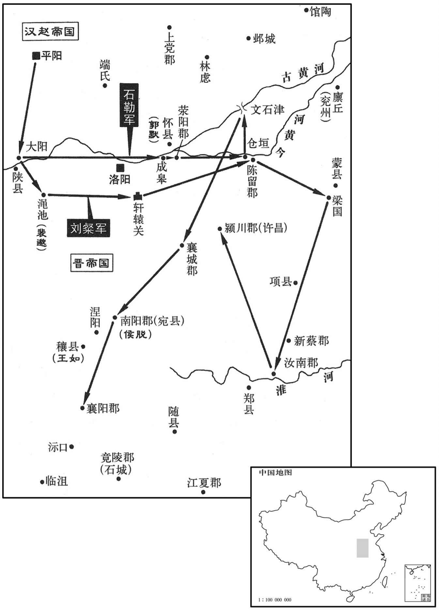

公元310年资治通鉴：本年记事、原文与白话对照
按原书编年位置阅读；追叙和史论不等于本年发生的事件。白话采用所据译本，缺译不以生成译文补齐。
卷87 · 本年记事
公元310年 · 晋孝怀皇帝永嘉四年
四年〔（庚午、三一○）〕
上传原文的注释括号有异常，字符原样保留；无法可靠划分的段落默认全文显示。
本年事件索引（现代整理）
- 汉大赦
- 刘渊立单氏为皇后、刘和为太子
- 石勒、王弥攻掠徐、豫、兖、冀诸州
- 成国将领文石杀太尉李国，以巴西降晋
- 钱璯谋杀王敦后起兵，周玘等合兵将其斩杀
- 曹嶷攻克东平，进兵琅邪
- 祁弘在广宗击败并杀死汉冀州刺史刘灵
- 张宝诈投梓潼，设伏助成国夺回郡县
- 幽、并、司、冀、秦、雍六州蝗灾严重
- 石勒、刘聪攻克怀县，河内太守裴整被俘
- 罗尚在巴郡去世
- 刘渊病重，任命刘聪等人辅政并设单于台
- 呼延攸、刘乘等挑唆刘和夺取刘聪兵权
- 刘聪即位为汉帝，立刘乂为皇太弟
- 蒲洪拒绝汉廷任命，自称护氐校尉、秦州刺史
- 山简、杜蕤强遣关中流民返乡，王如等起兵响应汉国
- 刘渊葬于永光陵，谥光文皇帝
- 刘粲、刘曜、王弥攻洛阳，石勒攻掠豫州
- 刘琨联合拓跋猗卢击败刘虎、白部鲜卑
- 拓跋猗卢迁部众入雁门，刘琨以五县换取援助
- 司马越拒绝刘琨出兵讨伐刘聪、石勒
- 刘虎退居肆卢川，受封楼烦公
- 刘琨升任平北将军，王浚任司空
- 洛阳饥荒日甚，王如等攻掠襄阳一带
- 石勒攻克宛城，兼并王如、侯脱等部众
- 司马越离开洛阳赴许昌，留军守卫宫城
- 东平王楙袭击何伦失败，逃亡避罪
- 周馥请求迁都寿春，裴硕袭击周馥而败
- 晋廷加封张轨，张轨遣马匹和毯布赈济京师
- 李骧围攻涪城，罗宇杀益州刺史皮素引发巴郡动乱
- 苟晞击败曹嶷，收复青州部分郡县
- 王逊整顿宁州，平定夷寇并安抚流民
- 刘聪因嫉妒兄长刘恭而将其刺杀
- 单皇后去世，刘聪尊母张氏为皇太后

本年形势与背景参考图
春，正月，乙丑朔，大赦。
春季，正月，乙丑朔（初一），宣布大赦。
汉主渊立单征女为皇后，〔单征，氐酋也，归汉见上卷二年。单，音善。〕梁王和为皇太子，大赦；封又乂为北海王；以长乐王洋为大司马。〔乐，音洛。〕
汉主刘渊立单徵的女儿为皇后，梁王刘和为太子，宣布大赦。封儿子刘义为北海王，以长乐王刘洋任大司马。
汉镇东大将军石勒济河，拔白马，王弥似三万众会之，共寇徐、豫、兖州。二月，勒袭鄄城，〔鄄，音绢。〕杀兖州刺史袁孚，遂拔仓垣，杀王堪。复北济河，攻冀州诸郡，〔复，扶又翻。〕民从之者九万余口。
汉镇东大将军石勒渡过黄河，攻克白马，王弥带领三万人与石勒会师一同进犯徐州、豫州、兖州。二月，石勒袭击鄄城，杀兖州刺史袁孚，又攻克仓垣，杀王堪。又北渡黄河，攻打冀州各郡，九万多百姓附从石勒。
成太尉李国镇巴西，帐下文石杀国，以巴西降罗尚。〔降，户江翻。〕
成汉太尉李国镇守巴西，部下文石杀死李国，献出巴西投降罗尚。
太傅越征建威将军吴兴钱璯〔吴分吴郡、丹阳置吴兴郡，以自乌程兴故也。璯，黄外翻。〕及扬州刺史王敦。璯谋杀敦以反，敦奔建业，告琅邪王睿。璯遂反，进寇阳羡，〔阳羡县，前汉属会稽郡，后汉属郡，自吴以来，分属吴兴郡。贤曰：阳羡故城，在今常州义兴县南。〕睿遣将军郭逸等讨之；周閗纠合乡里，与逸等共讨璯，斩之。閗三定江南，〔惠帝永兴元年讨石冰，永嘉元年讨陈敏，今又诛璯，是三定江南。〕睿以閗为吴兴太守，于其乡里置义兴郡，以旌之。〔时分吴兴之阳羡及长城县之西乡、丹阳之永世为义兴郡。〕
太傅司马越征召建威将军吴兴人钱和扬州刺史王敦。钱图谋杀死王敦后叛乱，王敦逃往建业，报告琅邪王司马睿。钱叛乱，进犯阳羡，司马睿派遣将军郭逸等人讨伐他。周组织联合乡里百姓，与郭逸等人一起讨伐钱，把他杀了。周三次平定江南，司马睿以周任吴兴太守，并在他家乡设置义兴郡以表彰周。
曹嶷自大梁引兵而东，所至皆下，遂克东平，进攻琅邪。
曹嶷从大梁带兵向东进攻，所向披靡，于是攻克东平，进兵攻打琅邪。
夏，四月，王浚将祁弘败汉冀州刺史刘灵于广宗，杀之。〔将，即亮翻，下同。广宗县，汉属巨鹿郡，晋属安平国。败，补迈翻。〕
夏季，四月，王浚部将祁弘在广宗打败汉冀州刺史刘灵，杀死刘灵。
成主雄谓其将张宝曰：「汝能得梓潼，吾以李离之官赏汝。」宝乃先杀人而亡奔梓潼，訇琦等信之，委以心腹。会罗尚遣使至梓潼，〔使，疏吏翻。〕琦等出送〔【严：「送」改「迎」。】〕之；宝从后闭门，琦等奔巴西。雄以宝为太尉。
成汉主李雄告诉他的部将张宝说：“你能攻下梓潼，我把李离的官职赏给你。”张宝于是杀人后逃亡投奔梓潼，訇琦等人都信任他，把他当作心腹。正遇到罗尚派使者到梓潼，訇琦等人出城送使者，张宝则在后边关团了城门，訇琦等人只好投奔巴西。李雄让张宝担任太尉。
幽、并、司、冀、秦、雍六州大蝗，食草木、牛马毛皆尽。〔雍，于用翻。〕
幽、并、司、冀、秦、雍等六州遭到严重蝗灾，蝗虫把草木、牛马的毛都啃食光了。
秋，七月，汉楚王聪、始安王曜、石勒及安北大将军赵国〔【严：「国」改「固」。】〕围河内太守裴整于怀，诏征虏将军宋抽救怀。勒与平北大将军王桑逆击抽，杀之；河内人执整以降，〔降，户江翻。〕汉主渊以整为尚书左丞。河内督将郭默收整余众，自为坞主，〔城之小者曰坞。天下兵争，聚众筑坞以自守；未有朝命，故自为坞主。将，即亮翻。〕刘琨以默为河内太守。
秋季，七月，汉楚王刘聪、始安王刘曜、石勒和安北大将军赵国，在怀县围攻河内太守裴整，朝廷诏令征虏将军宋抽救援怀县。石勒与平北大将军王桑阻击并杀死宋抽。河内人抓住裴整投降，汉主刘渊让裴整担任尚书左丞。河内郡督将郭默收拾裴整的残余部众，自己担任小城堡主，刘琨任郭默为河内太守。
罗尚卒于巴郡，诏以长沙太守下邳皮素代之。〔姓谱：皮姓，樊仲皮之后。〕
罗尚在巴郡去世，朝廷诏令以长沙太守下邳人皮素代替他的职务。
庚午，汉主渊寝疾；辛未，以陈留王欢乐为太宰，长乐王洋为太傅，〔乐，音洛。〕江都王延年为太保，楚王聪为大司马、大单于，并录尚书事。置单于台于平阳西。〔单，音蝉。〕以齐以裕为大司徒，鲁王隆为尚书令，北海王乂为抚军大将军、领司隶校尉，始安王曜为征讨大都督、领单于左辅，廷尉乔智明为冠军大将军、领单于右辅，光禄大夫刘殷为左仆射，王育为右仆射，任顗为吏部尚衵，〔任，音壬。顗，鱼岂翻。〕朱纪为中书监，护军马景领左卫将军，永安王安国领右卫将军，安昌王盛、安邑王钦、西阳王璇皆领武卫将军，分典禁兵。〔璇，句缘翻。〕初，盛少时，不好读书，〔少，诗照翻。好，呼到翻。〕只读孝经、论语，曰：「诵此能行，足矣，安用多诵而不行乎！」李熹见之，叹：「日望之如可易，〔易，弋豉翻，慢易也。〔及至，肃如严君，可谓君子矣！」渊以其忘笃，故临终委以要任。丁丑，渊召太宰欢乐等入禁中，受遗诏辅政。己卯，渊卒；〔考异曰：十六国春秋：「八月丁丑，渊召太宰欢乐等受遗诏，己卯卒，辛未葬。」按长历，七月壬戌朔，十六日丁丑，十八日己卯，八月辛卯朔，无丁丑己卯及辛未。辛未乃九月十一日。盖渊以七月卒，九月葬。十六国春秋误也。〕太子和即位。〔位，字玄泰，渊之嫡子。〕
两版字句有差异，建议核对原文。
庚午（初九），汉主刘渊卧病不起，辛未（初十），以陈留王刘欢乐任太宰，长乐王刘洋为太傅，江都王刘延年为太保，楚王刘聪为大司马、大单于，都兼任录尚书事。在平阳西侧设置单于台。以齐王刘裕任大司徒，鲁王刘隆为尚书令，北海王刘为抚军大将军兼司隶校尉，始安王刘曜为征讨大都督兼单于左辅，廷尉乔智明为冠军大将军兼单于右辅，光禄大夫刘殷为左仆射，王育为右仆射，任为吏部尚书，朱纪为中书监，护军马景兼左卫将军。永安王刘安国兼右卫将军，安昌王刘盛、安邑王刘钦、西阳王刘都兼任武卫将军，分别统领禁兵。当初，刘盛年幼时，不喜欢读书，只读《孝经》、《论语》，说：“读这两本书能够照着去作，就足够了，哪里还用多读而不去作呢？”李熹见到他，感叹说：“远远望他好像可以轻慢他，等到了跟前，严肃如同威严的君主，可以称得上是君子了。”刘渊因为他忠诚执著，所以临终时交给他重要的职务。丁丑（十六日），刘渊宣召太宰刘欢乐等人到皇宫里，接受遗诏辅佐朝政。己卯（十八日），刘渊去世。太子刘和继承皇位。
和性猜忌无恩。宗正呼延攸，翼之子也，渊以其无才行，终身不迁官；侍中刘乘，素恶楚王聪，卫尉西昌王锐，耻不预顾命；乃相与谋，说和曰：「先帝不惟轻重之势，使三王总强兵于内，〔惟，思也。二王，谓安昌王盛，安邑王钦，西阳王璇也；或曰：三王，谓齐王裕，鲁王隆，北海王乂。行，下孟翻。〕恶，乌路翻。说，输芮翻。〕大司马拥十万众屯于近郊，〔谓聪屯平阳西也。〕陛下便为寄坐耳。〔言大权非己出，托位于臣民之上，势同寄寓也。坐，徂卧翻。〕宜早为之计。」和，攸之甥也，深信之。辛巳夜，召安昌王盛、安邑王钦等告之。盛曰：「先帝梓宫在殡，四天未有逆节，〔聪，渊之第四子，故曰四王。或曰：谓聪、裕、隆、乂也。〕一旦自相鱼肉，天下谓陛下何！且大业甫尔，陛下勿信谗夫之言以疑兄弟；兄弟尚不可信，他人谁足信哉！」攸、锐怒之曰：「今日之议，理无有二，领军是何言乎！」命左右刃之。盛既死，钦惧曰：「惟陛下合。」壬午，锐帅马景攻楚王聪于单于台，〔单，音蝉。〕攸帅永安王安国攻齐王裕于司徒府，乘帅安邑王钦攻鲁王隆，使尚书田密、武卫将刘璇攻北海王乂。密、璇挟乂斩关归于聪，聪命贯甲以待之。〔贯甲，擐甲也。帅，读曰率。〕锐知聪有备，驰还，与攸，乘共攻隆、裕。攸、乘疑安国、钦有异志，杀之；是日，斩裕，癸未，斩隆。甲申，聪攻西明门，克之；〔刘渊都平阳，诸城门皆用洛阳诸城门名。〕锐等走人南宫，前锋随之。乙酉，杀和于光极西室，〔刘渊起光极殿于平阳。〕收锐、攸、乘，枭首通衢。〔枭，坚尧翻。〕
刘和性格多疑没有恩德。宗正呼延攸是呼延翼的儿子，刘渊因为他没有才能和德行，终身没有给他升官。侍中刘乘，一直怨恨楚王刘聪。卫尉西昌王刘锐，对没有受到刘渊临终任命也感到羞耻。这几个人于是一起密谋，对刘和说：“先帝不考虑轻重的情势，使三王在皇城里统领强兵，大司马刘聪拥兵十万在近郊驻扎，这样陛下不过是在他人那里寄寓的皇帝罢了。应当尽早考虑对付 这种情势。”刘和是呼延攸的外甥，所以对他深信不疑。辛巳（二十日）夜，宣召安昌王刘盛，安邑王刘钦通告他们。刘盛说：“先帝的棺椁还没有安葬，四王刘聪也没有变节，一旦自相残杀，天下会怎么说陛下？再说大业还 没有成功，陛下不要听信挑拨离间的小人的谗言来疑忌兄弟，兄弟尚且都不能相信，那别人谁还值得相信呢？”呼延攸、刘锐对他发怒道：“今天商议，没有别的道理可讲，领军你这是什么话！”便命令左右 随从把刘盛杀了。刘盛死后，刘钦害怕地说：“只听从陛下的旨意。”壬午（二十一日），刘锐带领马景在单于台攻打楚王刘聪，呼延攸带领永安王刘安国到司徒府攻打齐 王刘裕，刘乘带领安邑王刘钦攻打鲁王刘隆，派尚书田密、武卫将军刘攻打北海王
刘。田密、刘带着刘冲过关卡归附刘聪，刘聪命令穿上铠甲等待刘锐。刘锐得知刘聪已有防备，迅速回师，与呼延攸、刘乘一起攻打刘隆、刘裕，呼延攸、刘乘怀疑刘安国、刘钦有异心，就 杀了他们。当天，杀了刘裕，癸未（二十二日），杀了刘隆。甲申（二十三日），刘聪攻克西明门。刘锐等逃进南宫，前锋跟随着他。乙酉（二十四日），刘聪在光极殿西室杀了刘和，抓住刘锐、呼延攸、刘乘，在 交通要道上斩首并悬挂起来。
群臣请聪即帝位；聪以北海王乂，单后之子也，以位让之。〔考异曰：载记作「乂」。按十六国春秋作「乂」，今从之。〕乂涕泣固请，聪久而许之，曰：「乂及群公正以祸难尚殷，贪孤年长故耳。〔难，乃旦翻。长，知两翻。〕此家国之事，孤何敢辞！俟乂年长，当以大业归之。」遂即位。〔聪，字玄明，渊第四子。〕大赦，改元光兴。尊单氏曰皇太后，其母张氏曰帝太后。以乂为皇太弟、领大单于、大司徒。立其妻呼延氏为皇后。呼延氏，渊后之从父妹也。〔从，才用翻。〕封其子粲为河内王，易为河间王，翼为彭城王，悝为高平王；〔悝，苦回翻。〕仍以粲为抚军大将军、都督中外诸军事。以石勒为并州刺史，封汲郡公。
大臣们请刘聪登上皇位，刘聪因为北海王刘是单太后的太子，就把皇位让给刘。刘流着泪坚持请刘聪即位，刘聪好久后才同意了，说：“刘和诸公正是因为祸乱困扰还多，看重我年纪大几岁罢了。这是国家的事业。我怎么敢推辞！等刘长大，我将把大业交还于他。”于是即位。宣布大赦，改年号为光兴。尊奉单氏为皇太后，尊奉刘聪的母亲张氏为帝太后。以刘为皇太弟，兼大单于、大司徒。立自己的妻子呼延氏为皇后。呼延氏是刘渊皇后的堂妹。封儿子刘粲为河内王，刘易为河间王，刘翼为彭城王，刘悝为高平王。仍以粲任抚军大将军、都督中外诸军事。以石勒任并州刺史，封汲郡公。
略阳临渭氐酋蒲洪，骁勇多权略，群氐畏服之。〔晋志，略阳郡有临渭县，盖魏所置也。载记曰：氐之先，盖有扈氏之苗裔，世为西戎酋长。洪家池中生蒲，长五丈五，节如竹形，时咸谓之「蒲家」，因以为氏。其后，洪以谶文月「草付应王」，又其孙坚背文有「艹付」字，遂改姓苻氏。〕汉主聪遣使拜洪平远将军，洪不受，自称护氐校尉、秦州刺史、略阳公。〔蒲洪事始此。〕
略阳郡临渭县氐人酋长蒲洪，骁勇而善于权变谋略，氐人都敬畏而服从他。汉主刘聪派使者任命蒲洪为平远将军，蒲洪不接受，而自称护氐校尉、秦州刺史、略阳公。
雍州流民多在南阳，诏书遣还乡里。流民以关中荒残，皆不愿归；征南将军山简、南中郎将杜蕤各遣兵送之，促期令发。京兆王如遂潜结壮士，夜袭二军，破之。〔二军，山简及杜蕤所遣之军也。〕于是冯翊严嶷、〔嶷，鱼力翻。〕京兆侯脱各聚攻城镇，杀令长以应以，〔长，知两翻。〕未几，众至四五万，〔几，居岂翻。〕自号大将军、领司．雍二州牧，〔雍，于用翻。〕称藩于汉。
雍州流民大多在南阳谋生，朝廷下诏书要把流民遣返回故乡。流民们因为关中地区荒芜残 败，都不愿意回乡。征南将军山简、南中郎将杜蕤分别派兵遣送，催促他们限期出发。京兆人王如于是暗地联系精壮勇士，趁夜袭击山简、杜蕤二军，打败了他们。于是冯翊人严嶷、京兆人侯脱分别聚众攻打城镇，杀死县令等官员来响应王如，没有多久，聚众达四五万人，王如自己号称大将军，兼司、雍二州牧，自称藩属于汉。
九月，辛未，葬汉主渊于永光陵，谥曰光文皇帝，庙号高祖。
九月，辛未（十一日），在永光陵安葬汉主刘渊，谥号为光文皇帝，庙号为高祖。
冬，十月，汉河内王粲、始安王曜及王弥帅众四万寇洛阳，石勒帅骑二万会粲于大阳，败监军裴邈于渑池，〔帅，读曰率。败，补迈翻；下同。渑，弥兖翻。〕遂长驱入洛川。粲出轘辕，掠梁、陈、汝、颍间。〔轘，音还。〕勒出成皋关，〔晋志，河南成皋县有关。〕壬寅，围陈留太守王赞于仓垣，为赞所败，退屯文石津。〔据帝纪，文石津在河北又据永嘉六年，勒自葛陂北行，至东燕，使孔苌自文石津潜渡枋头，取向水船，则文石津在东燕之东北，枋头之东南。〕
冬季，十月，汉河内王刘粲、始安王刘曜以及王弥率领四万人进犯洛阳，石勒率领二万骑兵在大阳与刘粲会合，在渑池打败监军裴邈，于是长驱直入进入洛川。刘粲从辕出兵，在梁、陈、汝、颍等地区攻掠。石勒从成皋关出兵，壬寅（十三日），在仓垣包围陈留太守王赞，被王赞打败，退到文石津驻扎。
刘琨自将讨刘虎及白部，〔白部，鲜卑也。琨以刘虎及白部皆附汉，故讨之。〕遣使卑辞厚礼说鲜卑拓拔猗卢以请兵。〔说，输芮翻。〕猗卢使其弟弗之子郁律帅骑二万助之，遂破刘虎、白部，屠其营。琨与猗卢结为兄弟，表猗卢为大单于，以代郡封之为代公。时代郡属幽州，王浚不许，遣兵击猗卢，猗卢拒破之。浚由是与琨有隙。
刘琨亲自率兵讨伐刘虎及白部鲜卑，派使者携带丰厚的礼物用谦卑的言辞劝说鲜卑拓跋猗卢派兵。拓跋猗卢派他弟弟拓跋弗的儿子拓跋郁律率领二万骑兵援助刘琨，于是攻破刘虎、白部鲜卑的营垒，在营垒中大肆屠杀。刘琨与拓跋猗卢结拜为兄弟，表奏拓跋猗卢为大单于，把代郡封给他并封为代公。当时代郡属于幽州，王浚不同意，派兵打拓跋猗卢，拓跋猗卢抵御并打败王浚的军队，王浚因此对刘琨产生怨恨。
猗卢以封邑去国悬远，民不相接，乃帅部落万余家自云中入鴈门，从琨求陉北之地。〔陉北，石陉关之北也。陉，音刑。〕琨不能制，且欲倚之为援，乃徙楼烦、马邑、阴馆、繁畤、崞五县民于陉南，〔楼烦，匈奴之所居，其地在北河之南；今岚州楼烦郡，非古楼烦也。汉马邑县，唐之大同军是其地。汉阴馆县在句泣西北。繁畤县，在武州川。崞县，为北齐北显州平寇县。今五县虽存，皆非古县地矣。陉，谓陉岭。陉，音刑。〕以其地与猗卢；〔考异曰：怀帝纪：「永嘉五年，十一月，猗卢寇太原，刘琨徙五县居之。六年，八月，辛亥，刘琨乞师于猗卢，表卢为代公。」宋书索虏传在永嘉三年。晋春秋在永嘉四年，且云：「猗卢率万余家避难，自云中入鴈门。」后魏序纪在穆帝三年，即永嘉四年也。琨集，永嘉四年，六月，癸巳，上太傅府笺，云「卢感封代之恩」，故知在四年六月之前。又琨与丞相笺曰：「昔车骑感猗戦救州之勋，表以代郡封为代公，见听。时大驾在长安，会值戎事，道路不通，竟未施行。卢以封事见托，琨实为表上，追朮车骑前意，即蒙听许，遣兼谒者仆射拜卢，赐印及符册，浚以此见责。戎狄封华郡，诚为失礼；然盖以救弊耳，亦犹浚先以辽西封务勿尘。此礼之失，浚实启之。浚遂与卢争代郡，举兵击卢，为所破，纷错之由，始结于此。鴈门郡有五县在陉北，卢新并尘官，即徙陉北五县着陉南。卢因移，颇侵逼浚西陲围塞诸军营，浚不复见恕危弱而见罪责。」以此观之，卢非避难而来也。〕由是猗卢益盛。
拓跋猗卢因为封邑代郡距离自己的国家遥远，百姓连接不在一起，于是率领部落一万多家从云中进入雁门，向刘琨索求陉岭以北地区。刘琨不能控制他，况且也想依靠他作为自己的后援，就把楼烦、马邑、阴馆、繁、崞县等五个县的百姓迁徙到陉岭以南，把这些地方给予拓跋猗卢。拓跋猗卢从此更加强盛。
琨遣使言于太傅越，请出兵共讨刘聪、石勒；越忌苟晞及豫州刺史冯嵩，〔越、晞有隙，事见上卷二年。嵩盖亦不心附越者。〕恐为后患，不许。琨乃谢猗卢之兵，遣归国。〔考异曰：后魏序纪曰：「刘琨乞师救洛，穆帝遣步骑二万助之，东海王越以洛阳饥荒，不许。」按琨与丞相笺曰：「琨倾身竭辞，北和猗卢，遂引大众，躬启戎行。即具白太傅，切陈愚见，取贼之计，聪宜时讨，勒不可纵。而宰相意异，所虑不同；更忧苟晞、冯嵩之徒而稽二寇之诛，遣使节抑，挫臣锐气。臣即解甲，遣卢众归国。」若猗卢果遣众赴洛，琨笺安得不言也！〕
刘琨派使者去告诉太傅司马越，请求出兵一起讨伐刘聪、石勒。司马越因为疑忌苟以及豫州刺史冯嵩，担心他们会成为后患，没有同意。刘琨就辞谢拓跋猗卢的军队，让他们回国。
刘虎收余众，西渡河，居朔方肆卢川，汉主聪以虎宗室，封楼烦公。
刘虎收拾起残余部众，西渡黄河，居住在朔方的肆卢川，汉主刘聪把刘虎当作宗室，封他为楼烦公。
刘虎收余众，西渡河，居朔方肆卢川，〔肆卢川，在朔方塞内，后拓跋氏于其地置肆卢郡，真君七年，并入秀容郡。魏收地形志，秀容郡秀容县有肆卢城。汉主聪以虎宗室，封楼烦公。
本段缺少可靠对应白话，原文完整保留；未使用生成译文。
壬子，以刘琨为平北将军，王浚为司空，进鲜卑段务勿尘为大单于。〔单，音蝉。〕
壬子（二十三日），以刘琨任平北大将军，王浚任司空，把鲜卑段务勿尘封为大单于。
京师饥困日甚，太傅越遣使以羽檄征天下兵，使入援京师。帝谓使者曰：「为我语诸征、镇，今日尚可救，后则无及矣！」既而卒无至者。〔为，于伪翻。语，牛倨翻。卒，子恤翻。〕征南将军山简遣督护王万将兵入援，军于涅阳，〔涅阳县，属南阳郡。应劭曰：在涅水之阳。师古曰；涅，音乃结翻。〕为王如所败。〔败，补迈翻。〕如遂大掠沔、汉，进逼襄阳，简婴城自守。荆州刺史王澄〔澄时治江陵。〕自将，欲援京师，至沶口，〔水经注：零水上通梁州沔阳县，东径新城郡之沶乡县，谓之沶水；又东历宜城西山，谓之沶溪；东流合于夷水，谓之沶口。杨正衡曰：沶，音怡。〕闻简败，众散而还。〔还，从宣翻，又如字。〕朝议多欲迁都以避难，〔朝，直遥翻。难，乃旦翻。〕王衍以为石可，卖车牛以安众心。山简为严嶷所逼，自襄阳徙屯夏口。〔夏，户雅翻。〕
京城洛阳饥饿困顿日益严重，太傅司马越派遣使者带着插羽毛的檄文征召全国军队，让他们来救援京城。怀帝对使者说：“替我告诉各征、镇，今天还可以援救，迟了就来不及了！”但后来终究没有军队到达。征南将军山简派遣督护王万带兵前去救援，在涅阳驻军，结果被王如打败。王如于是在沔水、汉水地区大肆抢掠，进逼襄阳，山简只能围绕城墙进行防守。荆州刺史王澄亲自带兵。想去救援京城，到达口，听到山简的军队失败的消息，部众溃散，也只好回师，朝廷商议，多数人想迁都逃难，王衍认为不行，应该卖掉车、牛来安定人心。山简被严嶷逼迫，从襄阳迁徙到夏口驻扎。
石勒引兵济河，将趣南阳，〔趣，七喻翻。〕王如、侯脱、严嶷等闻之，遣众一万屯襄城以拒勒。勒击之，尽俘其众，进屯宛北。是时，侯脱据宛，〔宛，于元翻。〕王如据穰。〔穰县，汉属南阳郡，晋属义阳郡。〕如素与脱不协，遣使重赂勒，结为兄弟，说勒使攻脱。〔说，输芮翻。〕勒攻宛，克之；严嶷引兵救宛，不及而降。〔降，户江翻。〕勒斩脱；甲嶷，送于平阳，尽并其众。遂南寇襄阳，攻拔江西垒壁三十余所。〔勒既南寇襄阳，循汉而下，攻掠江西。〕还，趣襄城，王如遣弟璃袭勒；勒迎击，灭之，复屯江西。〔复，扶又翻。江西，太江之西也。趣，七喻翻。〕
石勒举兵渡过黄河，将要去南阳，王如、侯脱、严嶷等听说后，调遣一万人驻扎襄城来抵御石勒。石勒攻击他们，全部俘虏了他们，进入宛城之北驻扎。这时，侯脱据守宛城，王如据守穰城，王如与侯脱一直关系不和，派使者用重金贿赂石勒，结为兄弟，让他攻打侯脱。石勒攻克了宛城。严嶷率兵救援宛城，来不及救援便投降了。石勒杀了侯脱，囚禁了严嶷，送到平阳，把他们的部众全部兼并到自己的军队里。于是向南进犯襄阳，攻克拔除长江以西的营垒三十多处。回师，开赴襄城，王如派弟弟王璃袭击石勒。石勒迎头攻击，消灭了王璃的军队，又到长江以西的地区驻扎。
太傅越既杀王延等，〔见上永嘉三年。〕大失众望；又以胡寇益盛，内不自安，乃戎服入见，〔见，贤遍翻。〕请讨石勒，且镇集兖、豫。帝曰：「今胡虏侵逼郊畿，人无固志，朝廷社稷，倚赖于公，岂可远出以孙根本！」对曰：「臣出，幸而破贼，则国威可振，犹愈于坐待困穷也。」十一月，甲戌，越帅甲士四万向许昌，留妃裴氏、世子毗及龙骧将军李恽、右卫将军何伦守卫京师，〔帅，读曰率。恽，于粉翻。〕防察宫省；以潘滔为河南尹，总留事。越表以行台自随，用太尉衍为军司，朝贤素望，悉为佐吏，名将劲卒，威入其府。〔朝，直遥翻。将，即亮翻。〕于是宫省无复守卫，荒馑日甚，殿内死人交横；盗贼公行，府寺营署，并掘堑自守。〔堑，七艳翻。〕越东屯项，以冯嵩为左司马，自领豫州牧。
太傅司马越杀了王延等人后，大大地失去了大家的信任。又因为胡人敌寇日益强盛，内心也不安定，于是穿上戎装进宫拜见，请求讨伐石勒，并且屯兵镇守在兖州、豫州。怀帝说：“现在胡人强盗侵入，逼临京城郊外，人都没有了坚守的心思，朝廷社稷依赖于你，怎么能远征而使根本孤立呢？”司马越回答说：“我出战，如果能侥幸打败贼寇，就可以振奋国威，这比坐以待毙要强。”十一月，甲戌（十五日），司马越率领四万兵士向许昌进发，留下妃子裴氏、长子司马毗以及龙骧将军李恽、右卫将军何伦守卫京城，防卫察看宫廷，以潘滔任河南尹，总管留守事务。司马越上奏表让朝廷以行尚书台跟随自己，任用太尉王衍为军司，朝廷中享有声望的贤臣，都用作佐吏，名将勇士，全部纳入自己官署。这样，宫廷中实际再没有什么守卫，饥饿日益严重，宫殿中死人交相杂横，盗贼公然抢劫，各府、寺、营、署，都挖掘壕堑自卫。司马越向东驻扎在项县，以冯嵩为左司马，自己任兼任豫州牧。
竟陵王楙白帝遣兵袭何伦，不克；帝委罪于楙，楙逃窜，得免。〔楙，即东平王楙；帝践阼，改封竟陵王。〕
竟陵王司马通告怀帝后派兵袭击何伦，没有成功。怀帝归罪于司马，司马逃窜，得以逃避惩罚。
扬州都督周馥以洛阳孤危，上书请迁都寿春。太傅越以馥不先白己而直上书，大怒，召馥乃淮南太守裴硕。馥不肯行，令硕帅兵先进。〔帅，读曰率。〕硕诈称受越密旨，袭馥，为馥所败，〔败，补迈翻。〕退保东城。〔东城县，汉属九江郡，后汉属下邳国，晋属淮南郡。宋白曰：濠州定远县，汉东城县地〕
扬州都督周馥因为洛阳孤单危险，上书请求迁都寿春。太傅司马越因为周馥不先通过自己而直接上书皇帝，勃然大怒，宣召周馥与淮南太守裴硕。周馥不肯去，让裴硕率兵先去。裴硕假称得到司马越的密令，袭击周馥。结果被周馥打败，裴硕退到东城县防 守。
诏加张轨镇西将军、都督陇右诸军事。〔考异曰：帝纪云「安西」。按惠帝永兴二年，已加轨安西将军。今从本传。〕光禄大夫傅祗、太常挚虞遗轨书，〔遗，于季翻。〕告以京师饥匮。轨遣参军杜勋戏马五百匹，毯布三万匹。〔毯布，织毳为布也。毯，吉敢翻。〕
朝廷诏令让张 轨担任镇西将军、都督陇右诸军事。光禄大夫傅祗、太常挚虞给张轨去信，告诉他京城饥饿食品匮乏。张轨派遣参军杜勋去 献了五百匹马、三万匹毯布。
成太傅骧攻谯登于涪城。罗尚子宇及参佐素恶登，不给其粮。〔涪，音浮。恶，乌路翻。〕益州刺史皮素怒，欲治其罪；〔治，直之翻。〕十二月，素至巴郡，罗宇使人夜杀素，建平都尉暴重杀宇，巴郡乱。骧知登食尽援绝，攻涪龛急。士民皆熏鼠食之，饿死甚众，无一年离叛者。骧子寿先在登所，登乃归之。〔永兴元年，罗尚掠得骧妻柔其子寿，困在登所。〕三府官属表巴东监军南阳韩松为益州刺史，〔三府，平西将军府、益州刺史府、西戎校尉府，皆罗尚兼领者也。监，古衔翻。〕治巴东。
成汉太傅李骧到涪城攻打谯登。罗尚的儿子罗宇及其幕僚一直讨厌谯登，就不给谯登提供军粮。益州刺史皮素发怒，想拿罗宇问罪。十二月，皮素到巴郡，罗宇派人在夜里杀死皮素，建平都尉暴重杀了罗宇，巴郡大乱。李骧得知谯登粮尽而后援断绝，就更加猛烈地攻击涪城。城中士人百姓都挖老鼠当作食物，饿死了很多人，但没有一人叛变离去。李骧的儿子李寿先前被关在谯登处，谯登把他释放回去。平西将军府、益州刺史府、西戎校尉府的官员上奏表让巴东监军南阳人韩松担任益州刺史，治所设在巴东。
初，帝以王弥、石勒侵逼京畿，诏苟晞督帅州郡讨之。〔帅，读曰率。〕会曹嶷破琅邪，〔嶷，鱼力翻。〕北收齐地，兵势甚盛，苟纯闭城自守。晞还救青州，与嶷连战，破之。〔永嘉元年，苟晞讨魏植留弟纯守青州。〕
当初，怀帝因为王弥、石勒进犯逼临京城地区，就下诏令让苟统领州郡的军队去讨伐他们。正遇上曹嶷攻陷琅邪，向北攻占齐郡地区，兵势非常强盛，苟纯只能关闭城门防守。苟也只好回师救援青州，与曹嶷接连交战，打败曹嶷。
是岁，宁州刺史王逊到官，表李钊为朱提太守。〔朱提，音铢时。〕时宁州外逼于成，内有夷寇，城邑丘墟。逊恶衣菜食，招集离散，劳来不倦，〔劳，力代翻。〕数年之间，州境复安。诛豪右不奉法者十余家；以五苓夷昔为乱首，〔见八十五卷惠帝太安二年。苓，力丁翻。〕击灭之，内外震服。
这一年，宁州刺史王逊就任官职，表奏李钊任朱提太守。当时宁州外受成汉逼迫，内有夷人强盗，城邑都成了荒丘废墟。王逊节衣缩食，召集逃离流散的百姓，安抚而不知疲倦，几年之间，宁州辖境重新安定。又诛杀不遵守法律的十多家豪族大户。因为王苓夷人过去曾是作乱的祸首，就攻打消灭了他们，这样宁州内外都受到震慑而归服。
汉主聪自以越次而立，忌其嫡兄恭；因恭寝，穴其壁间，刺而杀之。〔刺，七亦翻。〕
汉主刘聪因为自己是超越次序而当的皇帝，便猜忌他的嫡 兄刘恭。趁刘恭睡觉，挖穿房间墙壁，把刘恭刺杀。
汉太后单氏卒；〔单，音善。〕汉主聪尊母张氏为皇太后。单氏年少美色，聪烝焉。〔下淫上曰烝，上淫下曰报。少，诗照翻。〕太弟乂屡以为言，单氏凓恚而死。〔恚，于避翻。〕乂宠由是渐衰，然以单氏故，尚未之废也。呼延后言于聪曰：「父死子继，古今常道。陛下承高祖之业，〔刘渊，庙号高祖。〕太弟何为者哉！陛下百年后，粲兄弟必无种矣。」〔种，章勇翻。〕聪曰：「然，吾当徐思之。」呼延氏曰：「事留变生。太弟见粲兄弟浸长，〔长，知两翻，下齿长同。〕必有不安之志；万一有小人交构其间，未必不祸发于今日也。」〔言乂将杀聪。〕聪心然之。〔为元帝建武元年聪杀乂张本。〕乂舅光禄大夫单冲泣谓乂曰：「疏不间亲。主上有意于河内王矣，殿下何不避之！」乂曰：「河瑞之末，主上自惟嫡庶之分，〔间，古苋翻。分，扶问翻。惟，思也。〕以大位让乂。乂以主上齿长，故相推奉。天下者，高祖之天下，兄终弟及，何为不可！粲兄弟既壮，犹今日也。且子弟之间，亲疏讵几，主上宁可有此意乎！」〔聪让乂事见上。乂此言必不发于是年，通鉴因呼延氏之言，遂连书之。几，居岂翻。〕
汉太后单氏去世，汉主刘聪尊奉母亲张氏为皇太后。单氏年轻貌美，刘聪与她私通。单氏的儿子太弟刘多次对此进行劝说，单氏惭愧忧愤而死。刘聪对刘的宠信因此逐渐减弱，但因为单氏的缘故，还没有废黜他。皇后呼延氏对刘聪说：“父亲死后由儿子继承。是古今通常的道理。陛下继承高祖刘渊的事业，太弟算干什么的？陛下百年之后，刘粲兄弟一定不会有后代存世了。”刘聪说：“是这样，我将要慢慢考虑这个问题。”呼延氏说：“事情放着不处理，就会发生变故。太弟看到刘粲兄弟逐步长大，内心一定会感到不安，万一有小人在其中挑拨离间，祸患说不定就会在今天发生。”刘聪心里认为说得对。刘的舅父光禄大夫单冲哭着对刘说：“关系疏远的人不替代关系亲近的。皇上有让河内王刘粲当太子的心思，殿下为什么不躲避呢？”刘说：“河瑞末年，主上自己考虑到嫡、庶的区别，以大位辞让给我，我因为皇上年长，所以推奉他即位。天下是高祖的天下，哥哥死了弟弟来继承，有什么不可以的？等刘粲兄弟长大，还应该像今天这样，再说父子和兄弟之间，难道还有什么亲疏？皇上难道有这个意思吗？”